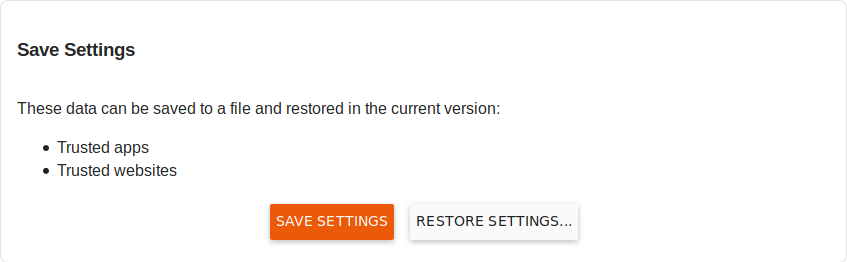
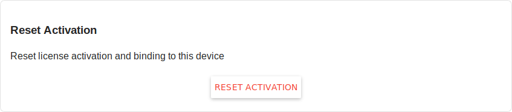
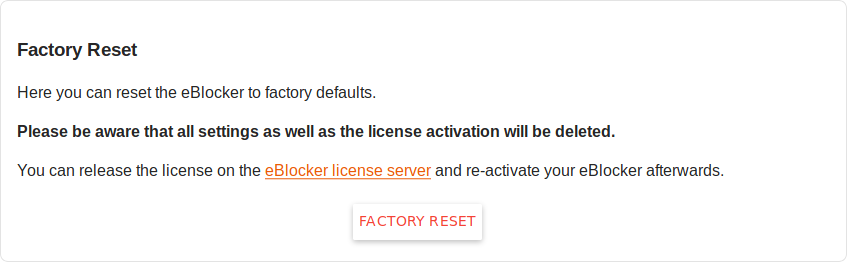

Note: This page has moved to https://eblocker.org/docs/system
Deutsch | English
eBlocker Base ✓ / eBlocker Pro ✓ / eBlocker Family ✓
This page is divided into the following sections:
Set the time zone and language of the eBlocker Controlbar and eBlocker Console. To set the time zone, first select the region and then the city of your country.
To set the time zone, first select the region and then the city of your country.
To set the language, click either English or German. The desired language is changed immediately.
Activate the admin password for your eBlocker. You can also change the current admin password here.

From this page you can restart or shut down eBlocker.

To restart eBlocker after shutting it down, unplug the device, wait 30 seconds and then reconnect it to the power supply.
The eBlocker detects events such as the network connection being disconnected or the power supply being disconnected without shutting down the eBlocker. Such events are recorded here for your information.

You are notified in the eBlocker Dashboard if there is a new entry in the event list.
If an error occurs, you can generate an automatic diagnostic report via this page, which you can send to us at the e-mail address support@eblocker.com This allows us to find a faster solution. Simply create the diagnostic report by clicking on the orange Generate report button and wait a few seconds. Afterwards you have the possibility to download the file and send it to our support. We will contact you as soon as possible.

Save Settings
Here you have the possibility to save some of your settings. If necessary, you can create a backup before restoring the eBlocker factory settings and restore it after restoring the factory settings.

If you click on the Save settings button, the following data is saved in a backup file.
The backup file is saved in your download directory.
To restore a backup file, simply click on the Restore settings button and select the backup file from your download directory.
Reset Activation
To reset the activation and license binding of the device, click on Reset activation.

A new window will appear asking if you really want to remove the license from the device. If you want to remove the license, please enter the e-mail address you used when activating the device. Please note that this process cannot be undone.
Factory Reset
Here you can reset the eBlocker to the factory settings. Please note that all settings and activation will be deleted.

You can reset the license via the eBlocker license server and then reactivate your eBlocker. Please go to the website https://www.eblocker.com/en/license-transfer/ and enter the email address with which you activated the eBlocker license. Afterwards you will receive an email from our license server and only need to follow the instructions of this email.